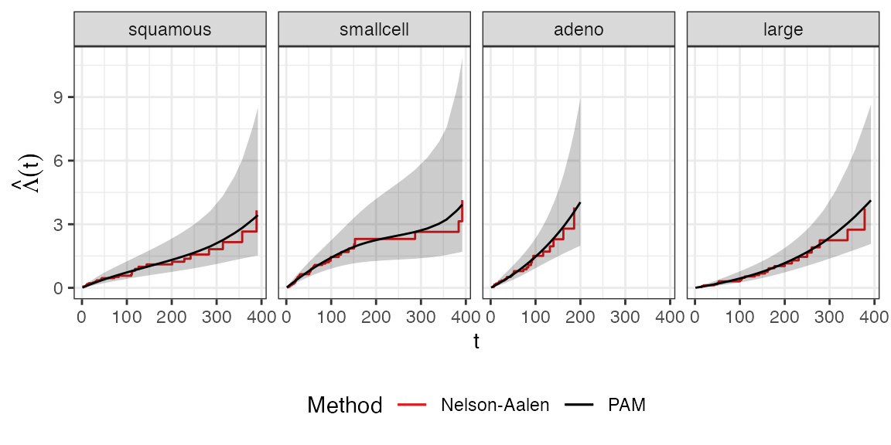

library(dplyr)
library(ggplot2)
theme_set(theme_bw())
library(mgcv)
library(survival)
library(pammtools)
Set1 <- RColorBrewer::brewer.pal(9, "Set1")Stratified baselines
In some cases the proportional hazards assumption for different groups (levels of a factor variable) is violated. One approach to resolve this problem is to fit a so called stratified Cox model, where each level \(k=1,\ldots,K\) of factor variable \(z\) will have its own baseline-hazard:
\(\lambda(t|z, x)=\lambda_{0k}(t, z)\exp(x'\beta)\).
For illustration we again use the veteran data (censored at day 400) from the survival package, where the cell type of the lung cancer had four levels:
data("veteran") # load veteran data## Warning in data("veteran"): data set 'veteran' not found
veteran <- veteran %>%
mutate(
trt = 1*(trt == 2),
prior = 1*(prior==10)) %>%
filter(time < 400) # restriction for illustration
table(veteran$celltype)##
## squamous smallcell adeno large
## 30 48 27 26Stratified Cox model
Fitting a stratified Cox model using the coxph function from the survival package is simple, including a strata term in the model formula.
The different baselines are visualized below:
baseline_gg <- ggplot(base, aes(x=time)) +
geom_step(aes(y=hazard, group=strata)) +
ylab(expression(hat(Lambda)(t))) + xlab("t")
baseline_gg + aes(col=strata)
Stratified PAM
We can obtain similar results with PAMs by fitting one smooth baseline estimate for each category of celltype in the data. Technically, we specify the by argument in mgcv s(...) function.
Note that in contrast to the model specification in coxph we need to include the celltype factor variable in the model specification:
ped <- veteran %>% as_ped(Surv(time, status)~., id="id")
pam <- gam(ped_status ~ celltype + s(tend, by=celltype), data=ped,
family=poisson(), offset=offset)Comparing the estimated baselines we get very similar results between the stratified Cox and stratified PAM models.
pinf <- ped %>%
group_by(celltype) %>%
ped_info() %>%
add_cumu_hazard(pam) %>%
rename(strata=celltype) %>%
filter(!(strata == "adeno" & tend > 200))
baseline_gg + aes(col="Nelson-Aalen") +
geom_line(data=pinf, aes(x=tend, y=cumu_hazard, group=strata, col="PAM")) +
geom_ribbon(data=pinf, aes(x=tend, ymin=cumu_lower, ymax = cumu_upper,
group=strata), fill = "black", col = NA, alpha = .2) +
facet_wrap(~strata, nrow=1) +
scale_color_manual(name="Method", values=c(Set1[1], "black")) +
theme(legend.position = "bottom")
Stratified Proportional Hazards Model
Both models can be easily extended to incorporate further covariates. If we assume that the covariate effects are not time-varying, this extension constitutes a so called stratified proportional hazards model. For example, including effects for treatment (trt), age (age) and the Karnofsky-Score (karno), we get the model
\[ \lambda(t|z, \mathbf{x}) = \lambda_{0k}(t)\exp(\beta_1 I(trt=1) + \beta_2\cdot x_{karno} + \beta_3\cdot x_{age}) \] where \(\lambda_{0k}(t)\) is the baseline for observation with cell type \(k\), \(k\in \{squamos,\ smallcell,\ adeno,\ large\}\):
cph2 <- update(cph, .~. + trt + age + karno)
pam2 <- update(pam, .~. + trt + age + karno)
cbind(pam=coef(pam2)[5:7], cox=coef(cph2))## pam cox
## trt 0.31096123 0.32764309
## age -0.01642337 -0.01679495
## karno -0.03670427 -0.03696870Again, covariate estimates are very similar between the two models and can be interpreted in the same way.